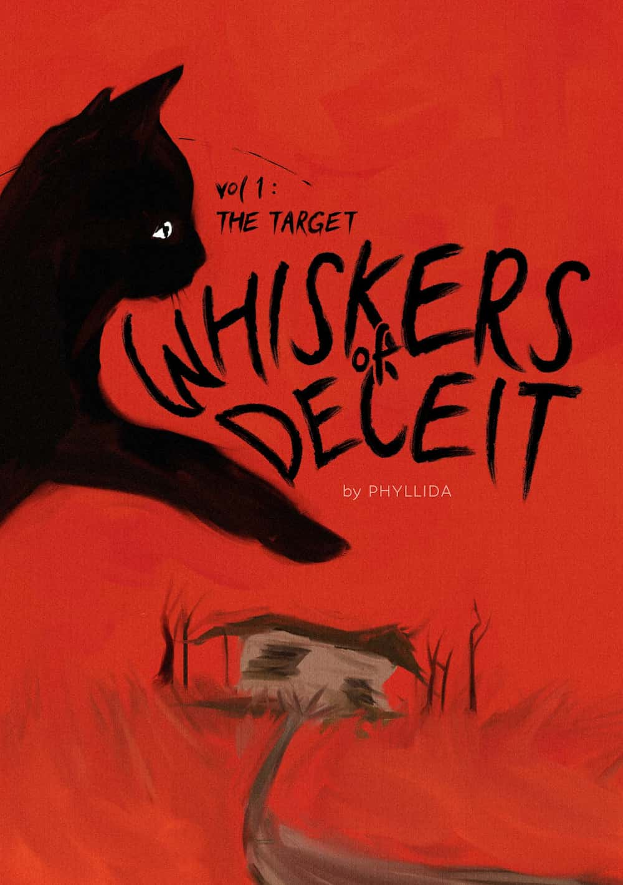
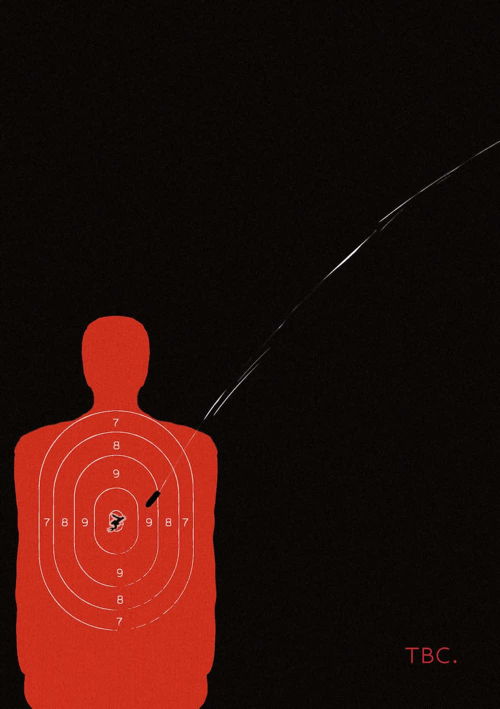
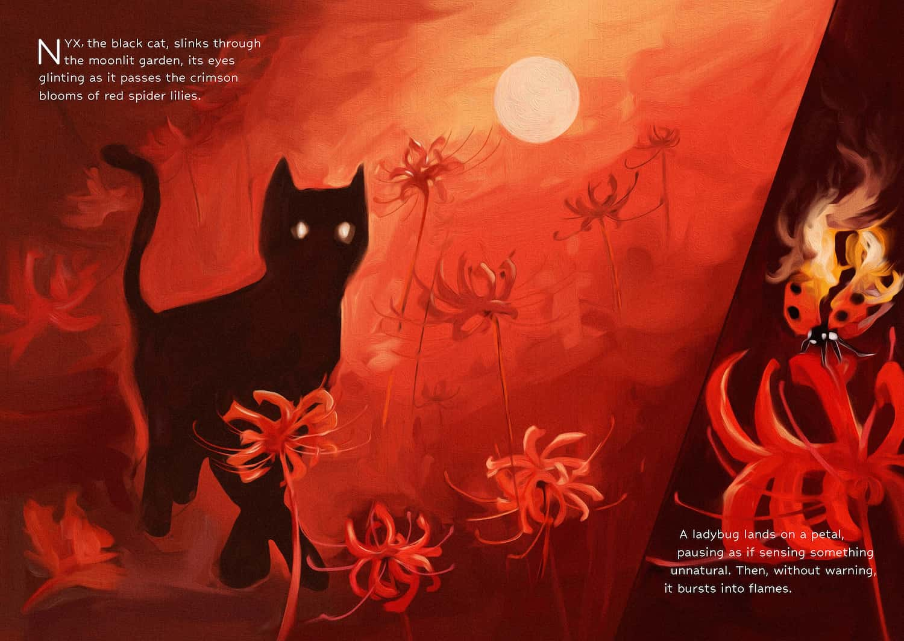
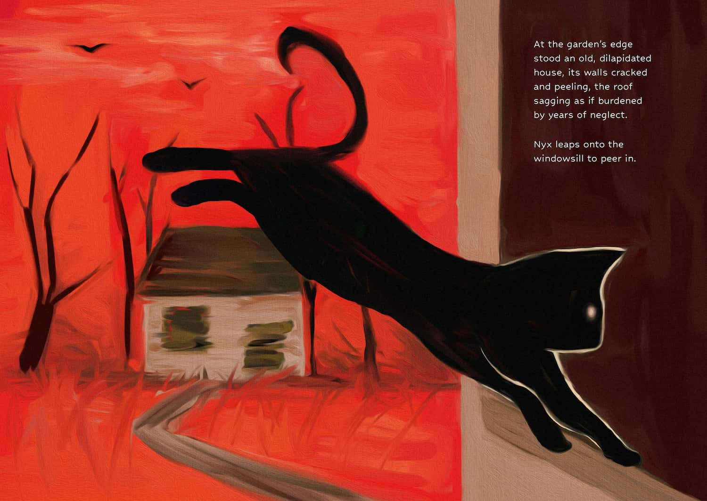
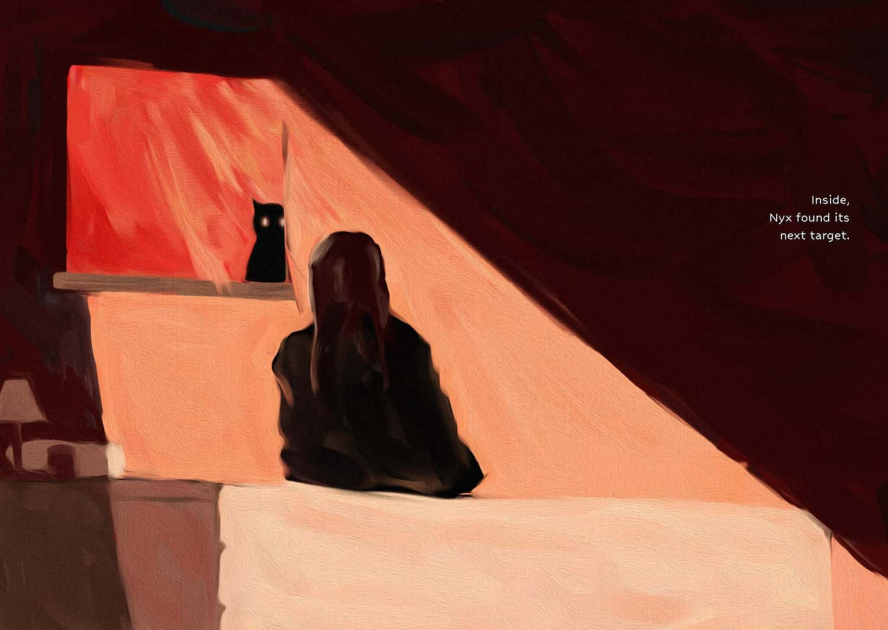

THE APPROACH
This zine features illustrations with high contrast between light and shadow and free brush strokes that creates a mysterious. The colour palette features mostly reds and blacks to evoke a mysterious atmosphere. feeling. The composition makes use of white space to draw attention to subtle details and evoke a sense of quiet tension.



TOOLS
Adobe InDesign
Adobe Photoshop